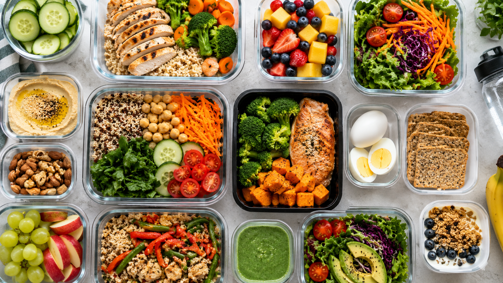
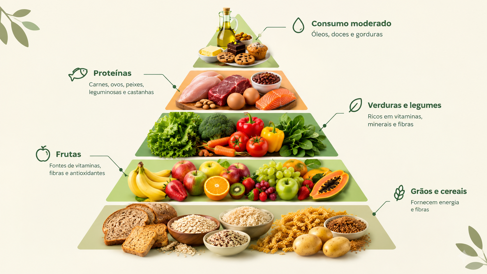

Conheça a NutriViva: uma marca que valoriza escolhas equilibradas e uma relação mais consciente com a alimentação.
Quero conhecer a NutriVivaA NutriViva nasceu com o propósito de aproximar as pessoas de uma alimentação variada e equilibrada.
Acreditamos que informação clara e escolhas possíveis para o dia a dia ajudam a construir hábitos
alimentares mais conscientes.
Conheça nosso atendimento com nutricionista para conversar sobre sua alimentação, suas necessidades e seus objetivos.

Descubra possibilidades para organizar refeições e fazer escolhas que se adaptem à sua rotina.

Aprenda sobre variedade, preparo dos alimentos e hábitos alimentares por meio de conteúdos e atividades educativas.